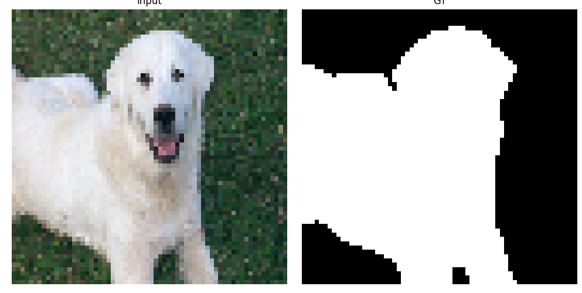

Projet de Traitement d'Images
Description
Développement d'algorithmes de traitement d'images dans le cadre d'un projet open source. Ce projet explore différentes techniques de filtrage, de segmentation et d'amélioration d'images en utilisant des approches modernes de traitement du signal.
Technologies
Méthodologie
- Analyse et implémentation d'algorithmes de filtrage
- Développement de techniques de segmentation
- Optimisation des performances de traitement
- Tests et validation sur différents types d'images
Fonctionnalités
- Filtrage et amélioration d'images
- Détection de contours et segmentation
- Transformation géométrique
- Interface utilisateur intuitive
Défis
- Optimisation des algorithmes pour des images haute résolution
- Gestion de la mémoire pour le traitement batch
- Implémentation d'algorithmes parallélisés